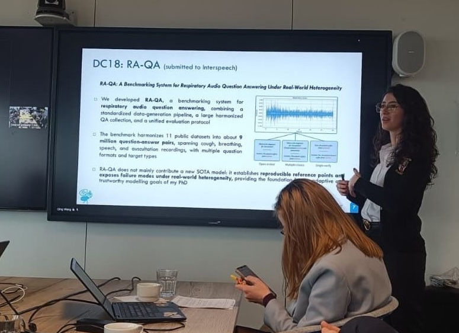

MSCA ANT Network meeting
Challenges in respiratory audio question answering
IMEC, Antwerp, Belgium

At the second meeting of the Marie Skłodowska-Curie Doctoral Network ANT, held in Antwerp, I presented our two latest papers (both under submission at the time), including RA-QA, a benchmarking system for respiratory audio question answering under real-world heterogeneity.